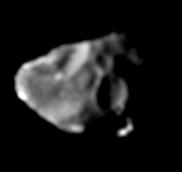

Jupiter has 97 natural satellites orbiting around it.
Of them, four are round - Ganymede, Callisto, Io, and Europa.
They have varying degrees of geologic activity due to the tidal forces of Jupiter.
93 other moons are known to orbit Jupiter.
Just like the four Galilean moons, the rest were assigned names of lovers of Zeus (Greek equivalent of Jupiter) and later their descendants.
They are significantly smaller than the Galilean moons and have irregular shapes.
These satellites can be further divided into inner, of which there are four, and outer (irregular).
The first possible detection of Ganymede, the biggest of the moons, was reported in 365 BC when Gan De noticed what might be a Jupiter moon with his naked eye, although it is not proven that the object is any of the satellites.
In 1610 Galileo Galilei discovered four "stars" around Jupiter that he found to be moving.
He later concluded that the bodies were moving around Jupiter.
Around the same time, Simon Marius discovers the moons independently.
The next discovery was that of Amalthea in 1892 by E. E. Barnard.
New moons were later discovered with the aid of photography - Himalia, Elara, Pasiphae, Sinope, Lysithea, Carme, Ananke and Leda.
Thanks to the Voyager spacecraft, further threee inner moons were found - Metis, Adrastea, and Thebe.
Many more moons were discovered with digital telescopes.
The theme of naming the moons after Zeus's lovers was first suggested by Johannes Kepler and later adopted by Simon Marius.
The names weren't accepted initially until the discovery of the moons of Saturn.
Before that, the four Galilean moons were refered to as Jupiter I through IV in order from closest to furthest.
Of the irregular moons, the convention is to name prograde moons with names ending in -a and -o, and retrogade moons - with -e.
Euporie is the first time the name of a descendant of Zeus was used.
After it, the only one to be given a name of a lover of Zeus was Dia.
Jupiter's moons are categorized into different groups based on their orbital characteristics.

Amalthea, the biggest inner moon
The inner satellites are a group of four satellites that orbit closer to Jupiter than Io - Metis, Adrastea, Amalthea, and Thebe.
They have regular orbits, that are prograde and have a low eccentricity and inclination, just like the Galilean moons.
Unlike the Galilean moons, the inner moons are much smaller and have irregular shapes.
Metis and Adrastea maintain Jupiter's main ring, whereas Amalthea and Thebe maintain their own faint outer rings.
Amalthea is the biggest irregularly-shaped moon around Jupiter.
The four biggest moons of Jupiter - Ganymede, Callisto, Io, and Europe - are known as the Galilean moons.
They were discovered by Galileo Galilei in 1610, hence the name.
Ganymede is the largest known satellite in the Solar System and is bigger than Mercury.
All but Europa are larger than Earth's Moon.
Io, Europa and Ganymede are in a 4:2:1 orbital resonance with each other.
Io is the innermost Galilean moon of Jupiter and is slightly larger than Earth's Moon.
It is volcanically active and has hundreds of volcanoes.
The activity of Io is caused by the gravitational pull of Jupiter on one side and Ganymede and Europa on the other side.
Together these three satellites are in a orbital resonance with each other.
Volcano eruptions can be so powerful that Earth telescopes can see them.
Europa, the second closest, is the smallest Galilean moon and is slightly smaller than Earth's Moon.
It is an icy moon with a smooth surface full of dark streaks.
It is speculated that Europa could have a subsurface ocean where extraterrestrial life could exist.
This is similar to Ganymede and Callisto, but there are more evidences showing such ocean on Europa than on the other two moons.
A similar satellite is Saturn's moon Enceladus.
The orbiter Europa Clipper by NASA that was launched in 2024 is planned to study the Europan surface.
Ganymede, the third Galilean moon, is the largest known satellite in the Solar System.
It is larger than the planet Mercury, but is less massive.
The Hubble Space Telescope has discovered evidence for underground saltwater ocean.
It has a magnetic field, the only satellite known to have such.
The magnetic field is likely affected by the interior ocean.
The ongoing ESA mission JUICE is planned to orbit Ganymede and study the satellite.
Callisto is the outernmost and the second biggest of the Galilean moons.
The surface is heavily cratered, covered with impact craters and white icy spots.
It has a relatively low albedo, which makes Callisto dark in appearance.
The Galileo spacecraft has gathered data from Callisto that shows the possibility of an interior ocean.
The four Galilean moons - Ganymede, Callisto, Io and Europa
Themisto, Valetudo, and Carpo group
Themisto is the innermost of the irregular satellites and has no known satellites with similar orbital parameters.
Valetudo is the only other satellite that is not part of any group, and is located between the Carpo and Ananke groups.
Until the discovery of S/2018 J 4, Carpo was also thought to be an isolated case.
These four satellites all have prograde orbits and are highly inclined.
The Himalia group satellites are the only other that have prograde orbits.
Their orbits lie between those of Themisto and the Carpo group, between 11.10 and 12.30 Gm.
Their inclinations range between 27.2° and 29.1° (lowest among the outer moons), and eccentricities between 0.11 and 0.24.
So far, 9 moons are known to comprise the group.
Members that have been given names include Leda, Ersa, Himalia, Pandia, Lysithea, Elara, and Dia.
Himalia, apart from being the biggest of the group, is also more massive than Amalthea.
The Ananke group is a group of retrograde satellites that orbit between Valetudo, and the Pasiphae and Carme groups.
Their semi-major axes range between 19.2 and 21.8 million km, their orbital inclinations between 144.3° and 155.5°, and their orbital eccentricities between 0.09 and 0.30.
There are 27 members, of which Ananke is the largest.
Pasiphae group moons are retrograde and orbit beyond the orbits of the Ananke group satellites.
Their semi-major axes are between 22.6 and 24.3 million km and the range overlaps with that of the Carme group).
Their inclinations range between 141.5° and 157.3°, and their eccentricities between 0.22 and 0.44.
18 members are part of the group, with Pasiphae being the largest.
Philophrosyne is closer to Jupiter than all of the Carme moons, and Kore is the most distant of all Jovian satellites.
The Carme group is made up of retrograde moons that orbit between 22.7 and 23.6 million km from Jupiter.
They have the lowest inclinations (without considering their retrograde orbits) among the retrogrades - between 164.3° and 164.9°, and their orbital eccentricities between 0.25 and 0.28.
There are 31 moons in this group, with Carme being the biggest.
Multiple spacecrafts have visited Jupiter and its satellites.
First to reach Jupiter was Pioneer 10, followed by Pioneer 11 one year later.
The two spacecrafts made the first close-up images of the moons.
Voyager 1 and 2 also observed the Galilean moons and found a few of the smaller ones.
Two Jupiter orbiter missions - Galileo and Juno - gathered more in-depth data about the unique Galilean moons, which would lead to the development of several dedicated missions.
Juno is also potentially getting another mission extension to study the inner moons.
The Jupiter Icy Moons Explorer, a program developed by the ESA, launched in 2023.
It will perform several flybys around Jupiter and the moons Europa, Ganymede and Callisto.
The last objective is to enter orbit around the biggest moon Ganymede.
NASA launched the Europa Clipper the next year.
The objective is to study Europa, mainly because of it's potential life suspected to inhabit an internal ocean.
External links